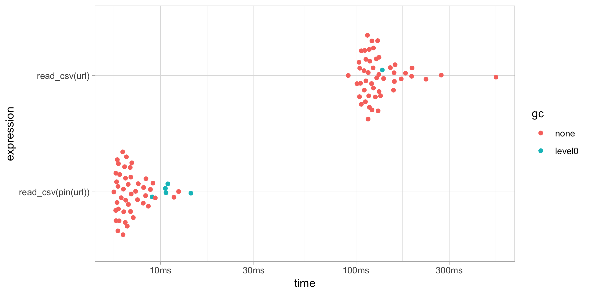

pins: Pin, Discover and Share Resources
You can use the pins package from R, or Python, to:
-
Pin remote resources locally with
pin(), work offline and cache results with ease. -
Discover new resources across different boards using
pin_find(). -
Share resources in GitHub, Kaggle or RStudio Connect by registering new boards with
board_register(). - Resources can be anything from CSV, JSON or Excel files to image archives.
If you find yourself using download.file() or asking others to download files before running your R code, use pin() to achieve fast, simple and reliable reproducible research over remote resources.
To start using pins, install this package as follows:
First, you can pin remote files with pin() to cache those files locally, such that, even if the remote resource is removed or while working offline – your code will keep working by using a local cache. Since pin(x) pins x and returns a locally cached version of x, this allows you to pin a remote resource while also reusing in existing code with minimal changes.
For instance, the following example makes use of a remote CSV file, which you can download and cache with pin() before it’s loaded with read_csv():
library(tidyverse)
library(pins)
url <- "https://raw.githubusercontent.com/facebook/prophet/master/examples/example_retail_sales.csv"
retail_sales <- read_csv(pin(url))This makes reading subsequent remotes files orders of magnitude faster, files are only downloaded when the remote resource changes; we can compare the two approaches using the bench package:

You can also use pins to cache intermediate results to avoid having to recompute expensive operations:
retail_sales %>%
group_by(month = lubridate::month(ds, T)) %>%
summarise(total = sum(y)) %>%
pin("sales_by_month")## # A tibble: 12 x 2
## month total
## <ord> <dbl>
## 1 Jan 6896303
## 2 Feb 6890866
## 3 Mar 7800074
## 4 Apr 7680417
## 5 May 8109219
## 6 Jun 7451431
## 7 Jul 7470947
## 8 Aug 7639700
## 9 Sep 7130241
## 10 Oct 7363820
## 11 Nov 7438702
## 12 Dec 8656874The pins package allows you to discover remote resources using pin_find(), currently, it can search resources in CRAN packages, Kaggle and RStudio Connect. For instance, we can search resources mentioning “seattle” in CRAN packages as follows:
## # A tibble: 6 x 4
## name description type board
## <chr> <chr> <chr> <chr>
## 1 hpiR/ex_sales Subset of Seattle Home Sales from hpiR p… table packa…
## 2 hpiR/seattle_sales Seattle Home Sales from hpiR package. table packa…
## 3 latticeExtra/Seat… Daily Rainfall and Temperature at the Se… table packa…
## 4 microsynth/seattl… Data for a crime intervention in Seattle… table packa…
## 5 vegawidget/data_s… Example dataset: Seattle daily weather f… table packa…
## 6 vegawidget/data_s… Example dataset: Seattle hourly temperat… table packa…Notice that all pins are referenced as <owner>/<name> and even if the <owner> is not provided, each board will assign an appropriate one. While you can ignore <owner> and reference pins by <name>, this can fail in some boards if different owners assign the same name to a pin.
You can then retrieve a pin as a local path through pin_get():
## # A tibble: 43,313 x 16
## pinx sale_id sale_price sale_date use_type area lot_sf wfnt
## <chr> <chr> <int> <date> <chr> <int> <int> <dbl>
## 1 ..00… 2013..… 289000 2013-02-06 sfr 79 9295 0
## 2 ..00… 2013..… 356000 2013-07-11 sfr 18 6000 0
## 3 ..00… 2010..… 333500 2010-12-29 sfr 79 7200 0
## 4 ..00… 2016..… 577200 2016-03-17 sfr 79 7200 0
## 5 ..00… 2012..… 237000 2012-05-02 sfr 79 5662 0
## 6 ..00… 2014..… 347500 2014-03-11 sfr 79 5830 0
## 7 ..00… 2012..… 429000 2012-09-20 sfr 18 12700 0
## 8 ..00… 2015..… 653295 2015-07-21 sfr 79 7000 0
## 9 ..00… 2014..… 427650 2014-02-19 townhou… 79 3072 0
## 10 ..00… 2015..… 488737 2015-03-19 townhou… 79 3072 0
## # … with 43,303 more rows, and 8 more variables: bldg_grade <int>,
## # tot_sf <int>, beds <int>, baths <dbl>, age <int>, eff_age <int>,
## # longitude <dbl>, latitude <dbl>Finally, you can also share resources with others by publishing to Kaggle, GitHub and RStudio Connect. To publish to say, Kaggle, you would first need to register the Kaggle board by creating a Kaggle API Token:
You can then easily publish to Kaggle:
There are other boards you can use or even create custom boards as described in the Understanding Boards article; in addition, pins can also be used with RStudio products which we will describe next.
RStudio
You can use RStudio and RStudio Connect to discover and share content within your organization with ease.
To enable new boards, you can use RStudio’s Data Connections to start a new ‘pins’ connection and then selecting which board to connect to:

Once connected, you can use the connections pane to track the pins you own and preview them with ease. Notice that one connection is created for each board.

To discover remote resources, simply expand the “Addins” menu and select “Find Pin” from the dropdown. This addin allows you to search for pins across all boards, or scope your search to particular ones as well:

You can then share local resources using the RStudio Connect board. Lets use dplyr and the hpiR_seattle_sales pin to analyze this further and then pin our results in RStudio Connect.
pin_get("hpiR/seattle_sales") %>%
group_by(baths = ceiling(baths)) %>%
summarise(sale = floor(mean(sale_price))) %>%
pin("sales-by-baths", board = "rsconnect")## # A tibble: 8 x 2
## baths sale
## <dbl> <dbl>
## 1 1 413950
## 2 2 516480
## 3 3 638674
## 4 4 939602
## 5 5 1748859
## 6 6 3384514
## 7 7 3063043
## 8 8 4550750After a pin is published to RStudio Connect, RStudio will open the web interface for that pin and make available various settings applicable to this published pin:
You can now set the appropriate permissions in RStudio Connect, and voila! From now on, those with access can make use of this remote file locally!
For instance, a colleague can reuse the sales-by-baths pin by retrieving it from RStudio Connect and visualize its contents using ggplot2:
pin_get("sales-by-baths") %>%
ggplot(aes(x = baths, y = sale)) +
geom_point() + geom_smooth(method = 'lm', formula = y ~ exp(x))
Python
All the functionality available in pins can also be used from Python as well, first install the pins module:
Followed by using pins from Python:
## pinx sale_id sale_price ... eff_age longitude latitude
## 0 ..0001800010 2013..2432 289000 ... 6 -122.312491 47.561380
## 1 ..0001800066 2013..21560 356000 ... 87 -122.322007 47.550353
## 2 ..0001800075 2010..24221 333500 ... 80 -122.311654 47.561470
## 3 ..0001800075 2016..6629 577200 ... 86 -122.311654 47.561470
## 4 ..0001800080 2012..9521 237000 ... 72 -122.309695 47.561472
## ... ... ... ... ... ... ... ...
## 43308 ..9904000025 2013..24831 276000 ... 85 -122.302228 47.714377
## 43309 ..9904000063 2016..29821 340000 ... 79 -122.303135 47.715209
## 43310 ..9906000030 2013..6620 1250000 ... 7 -122.356487 47.656115
## 43311 ..9906000035 2011..5655 447000 ... 83 -122.356649 47.656114
## 43312 ..9906000090 2010..17848 422500 ... 63 -122.357895 47.656112
##
## [43313 rows x 16 columns]Please make sure to pin visit, rstudio.github.io/pins, where you will find detailed documentation and additional resources.